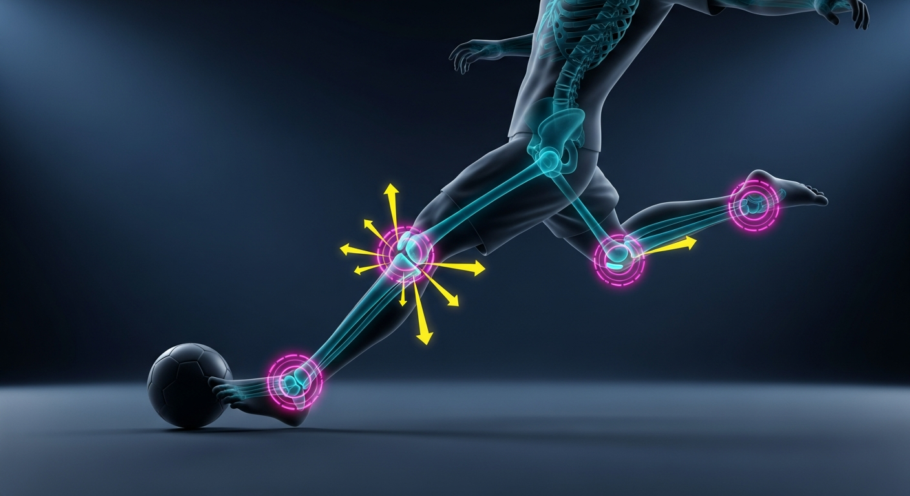
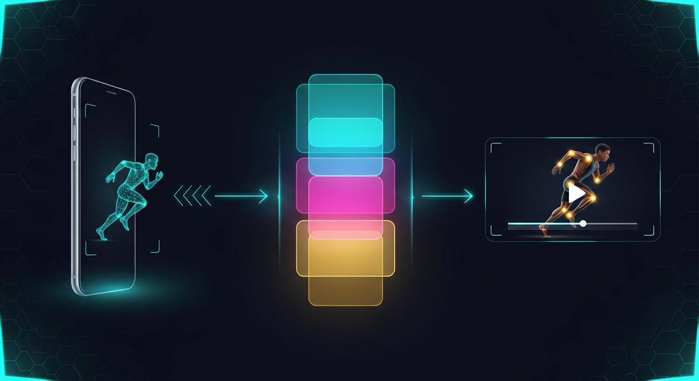

Hold the button. Move. Release. Get instant kinematic coaching grounded in real biomechanics, voiced by Chirp 3 HD, with a Veo-generated reference clip of you doing it right — all powered end-to-end by the Google AI stack.
OmniForm is a single-page web app that turns any device with a camera into a real-time biomechanics coach. There is no text input anywhere — it's just a camera and one glowing button.

Hero + data-flow visuals above generated by Google Imagen 4 Ultra via ai.models.generateImages() on the same @google/genai SDK powering the live app. Every visual asset in this project is Google-AI-generated.
Two services, both on Cloud Run. The user's recorded video never persists on the server — it's replayed from the browser's in-memory blob.
| Multimodal video analysis | Gemini 3.5 Flash via @google/genai Interactions API — typed steps, multimodal video input, server-side history |
| Agent orchestration | Google Agent Development Kit (ADK) — LlmAgent with Zod-validated structured output, Runner.runEphemeral, InMemorySessionService |
| Reference-video generation | Veo 3.1 Fast (veo-3.1-fast-generate-preview) image-to-video — takes the user's first video frame as the reference so the output animates the same person in the same setting |
| Voiced coaching | Google Cloud Text-to-Speech · Chirp 3 HD (en-US-Chirp3-HD-Charon) with browser SpeechSynthesis fallback |
| On-device pose detection | MediaPipe BlazePose (@mediapipe/tasks-vision) — GPU-accelerated WASM, never leaves the device |
| Runtime | Google Cloud Run (frontend + backend) — serverless, autoscale, graceful SIGTERM drain, non-root containers |
| Observability | Cloud Logging via JSON stdout with severity field |
| Secrets | Secret Manager bound via --update-secrets (never --set-env-vars) |
| Data flywheel | BigQuery-shape JSONL — every analysis writes a row ready for bq load |
The Gemini prompts are written to handle any human movement, not just sport skills:
Soccer strike, jump shot, golf swing, deadlift, sprint, climbing, swim stroke.
Walking, running, stair climb, sit-to-stand, post-injury return-to-walk.
Sitting form, standing alignment, lifting mechanics, overhead carry.
Range-of-motion work, asymmetric load detection, knee-valgus tracking.
OmniForm needs a Gemini API key (free tier works) and Node 20. The full live app — Cloud Run + Veo + Chirp 3 HD — deploys in one command.
git clone https://github.com/vnmoorthy/Omniform.git
cd Omniform
# 1. backend
cd backend
cp .env.example .env # add GEMINI_API_KEY (and optionally GOOGLE_TTS_API_KEY)
npm install
node --env-file=.env index.js # http://localhost:8080
# 2. frontend (separate terminal)
cd frontend
cp .env.local.example .env.local
npm install
npm run dev # http://localhost:3000# Pre-reqs: gcloud auth login + billing-enabled GCP project +
# backend/.env populated with GEMINI_API_KEY (and optionally GOOGLE_TTS_API_KEY).
PROJECT_ID=your-project-id ./deploy.shThe script enables APIs, creates Secret Manager entries (omniform-gemini, omniform-tts, omniform-demo-token), deploys both services to Cloud Run, locks the backend's CORS to the frontend URL, and prints the final URLs.
deploy.sh for a one-command production deploy. To preview the UI without deploying, run the local steps above.
URL.createObjectURL.X-Demo-Token shared secret.SIGTERM drain, 0.0.0.0 bind.